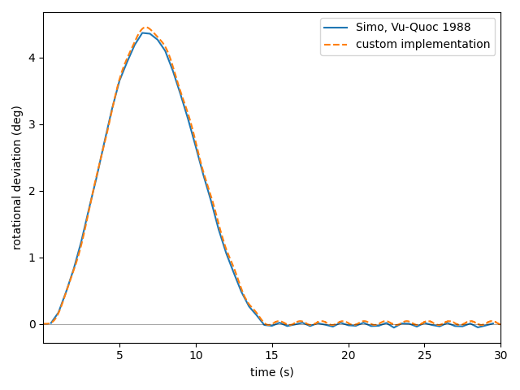
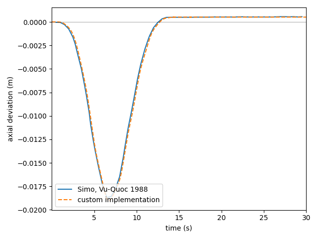
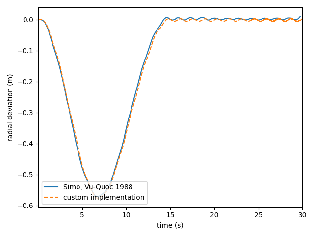

The transient tests validate the capabilities of the implementation to perform dynamic simulations. These tests verify the assembly of individual elements into complex structural systems and validate the behavior of interconnected rod networks.
Test Cases
Test 1
Test 1 implements Example 5.1 from Simo, Vu-Quoc (1988). This example shows the spin-up of a flexible beam and the subsequent elongation under centrifugal load as well as the fluttering of the tip. The results obtained by the custom implementation agree well with the results reported in literature.
  
Test 2
Test 2 implements Example 1 from Lang, Linn, Arnold (2011). This example shows the free dropping of a flexible beam. The results obtained with the current implementation agree well with the results from literature.
Test 3
Test 3 implements Example 5.2 from Simo, Vu-Quoc (1988). This example shows the dynamic behavior of a right-angle cantilever beam subjected to out-of-plane loading at its elbow. The results obtained with the current implementation agree well with the results from literature.